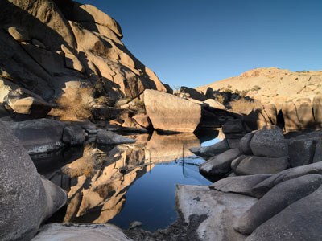
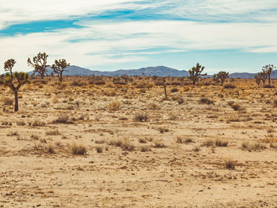
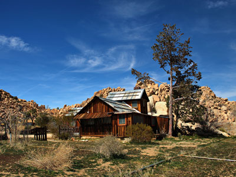
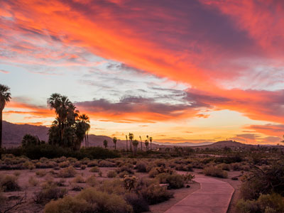
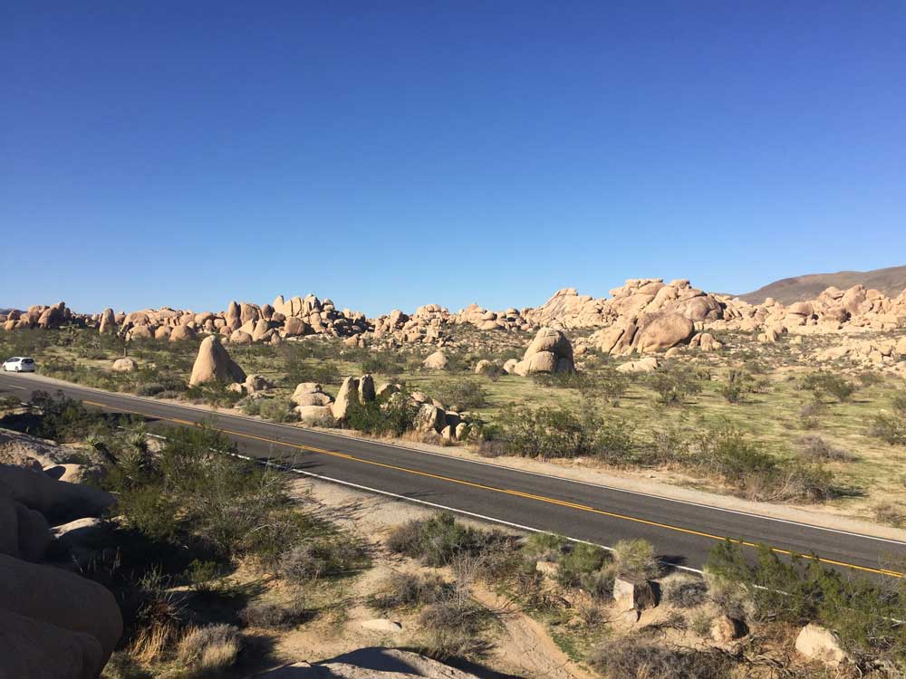
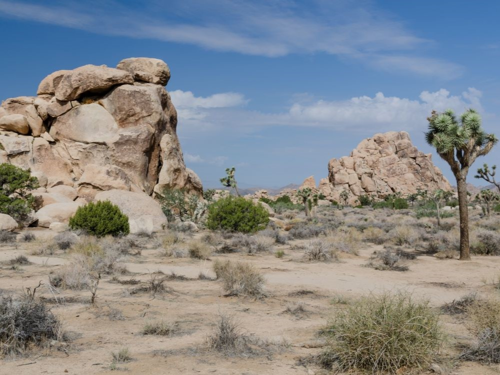

.jpg){kind=link}
Joshua Tree National Park Travel Guide
Named for the Joshua trees (Yucca brevifolia) native to the Mojave Desert, the park includes parts of two deserts, each an ecosystem whose characteristics are determined primarily by elevation: the higher Mojave Desert and the lower Colorado Desert
Park open 24/7
Joshua Tree Visitor Center
Open daily 7:30am to 5pm
Oasis Visitor Center (Twentynine Palms)
Open daily; hours vary by season
Cottonwood Visitor Center
Open daily 8:30am to 4pm
Black Rock Nature Center
Open daily 8am to 4pm
Entrance Fee: $30.00
Accepts America The Beautiful Pass
How to Get There
From Phoenix (158 mi): Get on I-10 W. Follow I-10 W to Cottonwood Springs Road in Riverside County. Take exit 168 from I-10 W. Follow Cottonwood Springs Road.
From Los Angeles (227 mi): Get on US-101 S. Follow I-10 E to Cottonwood Springs Road in Riverside County. Take exit 168 from I-10 E.Follow Cottonwood Springs Road.
Overview
Joshua Tree National Park protects nearly 800,000 acres of southeastern California desert, where two distinct deserts meet. The higher, cooler Mojave Desert in the north and west is home to the park's namesake Joshua trees (Yucca brevifolia), which are spread across valleys strewn with giant piles of golden granite boulders. The lower, hotter Colorado Desert in the east and south is a land of creosote bush, cholla cactus, and ocotillo. The park's twisted trees, otherworldly rock formations, palm oases, and starry night skies have made it one of the most recognizable desert landscapes in the world.
The area was home to the Serrano, Cahuilla, and Chemehuevi peoples, and later to cattle ranchers, miners, and homesteaders. In the 1930s, Pasadena resident Minerva Hoyt campaigned to protect the desert from collectors who were removing cacti and Joshua trees for gardens in Los Angeles. In 1936, President Franklin D. Roosevelt proclaimed Joshua Tree National Monument, and the California Desert Protection Act made it a national park in 1994. Today the park draws around three million visitors a year. People come to see the Joshua trees and rock formations, to hike, camp, and stargaze, and to climb, as the park is one of the world's top destinations for rock climbing and bouldering.
Park Sections
Most visitors spend their time in the park's northwestern section, the high Mojave Desert, which is reached through the West Entrance in the town of Joshua Tree and the North Entrance in Twentynine Palms. This area has the park's thickest Joshua tree forests and its best-known sights, including Hidden Valley, Barker Dam, Keys View, Skull Rock, and the Wonderland of Rocks. South of there, Pinto Basin Road drops into the Colorado Desert, passing the Cholla Cactus Garden and Ocotillo Patch on the way to Cottonwood Spring and the South Entrance off Interstate 10. Several areas along the park's northern edge are reached by separate roads from outside the park, including Black Rock Canyon near Yucca Valley, Indian Cove, and the Fortynine Palms Oasis trailhead near Twentynine Palms. It takes about 1.5 hours to drive from the West Entrance to the South Entrance.
Sightseeing and Scenic Drives
The main scenic drive is Park Boulevard, which connects the West and North Entrances. It winds through Joshua tree forests and boulder fields past pull-offs at Hidden Valley, Barker Dam, Jumbo Rocks, Skull Rock, and many climbing areas. A side road climbs to Keys View, the park's most famous overlook. At 5,185 feet, it looks out over the Coachella Valley, the San Andreas Fault, the Salton Sea, and Mount San Jacinto, and is a popular spot at sunset. Pinto Basin Road heads south through the transition between the two deserts to the Cholla Cactus Garden, a dense field of teddy-bear cholla that glows in the early morning and late afternoon light. The 18-mile Geology Tour Road is an unpaved route through Pleasant Valley that is best for high-clearance vehicles.
Hiking
Joshua Tree has many short, easy trails that are good for families. Popular choices include the Hidden Valley loop through a boulder-ringed valley once used by cattle rustlers, the Barker Dam loop to a small reservoir and petroglyphs, the Arch Rock Nature Trail, the walk to Skull Rock, and the nature trail through the Cholla Cactus Garden. Moderate hikes include the climb up Ryan Mountain (3 miles round trip), which has some of the best views in the park, and the hikes to Fortynine Palms Oasis and the Wall Street Mill. Longer hikes include Lost Palms Oasis from Cottonwood Spring, the Boy Scout Trail, and the historic Lost Horse Mine. Shade and water are scarce, so hikers should carry plenty of water, especially in warm weather. See the Joshua Tree trails table for a full list.
Other Activities
Joshua Tree is one of the world's premier rock climbing destinations, with more than 8,000 climbing routes and thousands of boulder problems on its rough granite. Climbers come from around the world, especially from fall through spring, and several local guide services offer lessons and guided climbs for beginners. The park is also a certified International Dark Sky Park, and stargazing is a major draw. Its dark skies reveal the Milky Way on clear, moonless nights. Rangers lead guided walking tours of Keys Ranch (the Desert Queen Ranch), a well-preserved homestead, on a seasonal schedule. Other activities include horseback riding, mountain biking on park roads, birdwatching at the oases, and ranger programs. Just outside the park, the towns of Joshua Tree, Yucca Valley, and Pioneertown are known for their quirky art scene, music venues, and Old West film sets.
Flora and Wildlife
The park is best known for protecting the Joshua tree, a member of the agave family that grows only in the Mojave Desert. The densest stands are in Queen Valley, Lost Horse Valley, and along Covington Flats. The park also protects the California fan palm, the only palm native to California, at five desert oases, including the Oasis of Mara near Twentynine Palms, Fortynine Palms, and Lost Palms Oasis. In spring, especially after a wet winter, wildflowers bloom across the lower deserts, and ocotillo, cholla, and other cacti burst into color. Wildlife includes desert bighorn sheep, coyotes, black-tailed jackrabbits, kangaroo rats, roadrunners, golden eagles, and the threatened desert tortoise, along with rattlesnakes, tarantulas, and lizards. Many animals are active only at dawn, dusk, and night. The oases and Barker Dam are good places to look for birds and bighorn sheep.
Access
Joshua Tree is in southeastern California, about 2.5 hours east of Los Angeles and about 45 minutes to an hour northeast of Palm Springs. The park has three main entrances. The West Entrance and North Entrance are reached from Highway 62 (Twentynine Palms Highway) in the towns of Joshua Tree and Twentynine Palms. The South Entrance is reached from Interstate 10 at Cottonwood Springs Road, about 25 miles east of Indio. The closest airport is Palm Springs International Airport, and Ontario and Los Angeles International Airports are farther away. There is no public transportation into the park, so a car is essential. There are also no gas stations or restaurants inside the park, so visitors should fill up and bring food and water from town.
Seasons
The park is open all year, but the most popular times to visit are spring (March through May) and fall (October and November), when daytime temperatures are pleasant. Spring brings wildflowers, blooming cacti, and, in some years, flowering Joshua trees, but also the biggest crowds, especially on weekends and holidays. Summer is very hot, with highs often above 100°F, so hiking is best done early in the morning. Winter brings cool, clear days and cold nights, with occasional snow at higher elevations that makes for striking photos of Joshua trees. The paved roads stay open all year, though dirt roads like the Geology Tour Road may close after heavy rain. Campgrounds are busiest from October through May.
Camping and Lodging
There is no lodging inside the park, but camping is one of the most popular ways to experience Joshua Tree. The park has nine campgrounds, including Jumbo Rocks, Hidden Valley, Ryan, White Tank, Belle, Indian Cove, Black Rock, Cottonwood, and Sheep Pass (for groups). Most require reservations on Recreation.gov during the busy season, and sites sell out quickly on weekends. Backcountry camping is also allowed with a permit. Outside the park, the towns of Joshua Tree, Yucca Valley, and Twentynine Palms along Highway 62 offer motels, inns, and many vacation rentals, from restored homestead cabins to glamping domes. Pioneertown, just northwest of Yucca Valley, has a famous motel and live-music venue. Palm Springs, Palm Desert, Desert Hot Springs, and Indio, about an hour away, offer resorts and hotels in all price ranges.
Visitor Centers
The park has four visitor centers. The Joshua Tree Visitor Center is in the town of Joshua Tree near the West Entrance, and the Oasis Visitor Center in Twentynine Palms sits next to the Oasis of Mara near the North Entrance. The Cottonwood Visitor Center is just inside the South Entrance. The Black Rock Nature Center is at Black Rock Campground near Yucca Valley. Each offers maps, exhibits, entrance passes, and rangers who can help plan a visit, and several have bookstores run by the Joshua Tree National Park Association. Hours vary by season.
This article uses material from the Wikipedia articles "Joshua Tree National Park" and "Joshua Tree", which are released under the Creative Commons Attribution-Share-Alike License 3.0
This article uses material from nps.gov "Joshua Tree National Park"
Featured Locations and Trails
Arch Rock Nature Trail
Natural rock formation surrounded by desert terrain and boulder fields, accessible via a short loop trail with interpretive signage and scenic views.
Natural rock formation surrounded by desert terrain and boulder fields.

King of Hearts / Wikimedia Commons / CC-BY-SA-3.0, CC BY-SA 3.0, via Wikimedia Commons

Barker Dam Trail
Dam with water-storage reservoir constructed by early cattlemen in 1900, is a gathering place for desert wildlife, including many species of birds and desert bighorn sheep, and can be reached via a short loop trail.
Dam with water-storage reservoir constructed by early cattlemen in 1900, can be reached via a short loop trail.
Black Rock
Expansive desert region featuring dense Joshua tree forests, rugged canyon trails, and panoramic views from high-elevation ridgelines.
Boy Scout Trail
Long-distance desert trail traversing Joshua tree forests, rugged canyons, and granite formations with designated backcountry campsites and panoramic views.
Long-distance desert trail traversing Joshua tree forests, rugged canyons, and granite formations.
Cholla Cactus Garden
Short loop trail winding through a dense field of teddybear cholla cacti in a transitional desert zone, known for its striking sunrise views and photogenic terrain.
Short loop trail winding through a dense field of teddybear cholla cacti.
Cottonwood Spring
Important water stop for prospectors, miners, and teamsters traveling from Mecca to mines in the north and where a number of park hikes begin
Desert Queen Mine
1.6 mi roundtrip, 150 ft elevation gain
One of the more long-lived gold mines of Southern California's high desert region, with a hiking trail leading to the mine
Fortynine Palms Oasis
Moderately strenuous desert hike leading to a secluded palm oasis nestled in a rocky canyon, offering panoramic views and a rare water source for wildlife.
Moderately strenuous desert hike leading to a secluded palm oasis.

Tony Webster from Portland, Oregon, CC BY-SA 2.0, via Wikimedia Commons
.jpg){kind=link}
Geology Tour Road
Scenic 18-mile dirt road loop through desert valleys and rugged terrain featuring numbered geological stops, panoramic viewpoints, and limited access for high-clearance vehicles.
-400.jpg)
Tony Webster from Portland, Oregon, CC BY-SA 2.0, via Wikimedia Commons
Hidden Valley Trail
From Joshua Tree Visitor Center (14 mi): Head east on CA-62, turn right onto Park Blvd, enter Joshua Tree National Park through the West Entrance, and continue on Park Blvd for approximately 14 miles to reach the Hidden Valley Trailhead near the Hidden Valley Picnic Area.
One-mile loop trail that winds among massive boulders through what was believed to be a legendary cattle rustlers' hideout
Jumbo Rocks / Skull Rock
Favorite stop for park visitors featuring two hollowed-out eye sockets formed and the rock began to resemble a skull

Tony Webster from Portland, Oregon, CC BY-SA 2.0, via Wikimedia Commons
Keys Ranch
Keys Ranch is a prime example of early settlement in the Joshua Tree National Park area is a symbol of the resourcefulness of early settlers
Prime example of early settlement is a symbol of the resourcefulness of early settlers in the Joshua Tree National Park area.
Keys View
Popular destination, perched on the crest of the Little San Bernardino Mountains, provides panoramic views of the Coachella Valley
Lost Horse Valley
Lost Horse Valley has been called "the centerpiece of the park" because of the quality of its stands of Joshua trees and its geological formations and contains the Lost Horse Mine
Called "the centerpiece of the park" because of the quality of its stands of Joshua trees and its geological formations.
Lost Palms Oasis Trail
7.2 mile day-hike trail located in the southernmost part of Joshua Tree National Park known for the beautiful palm trees from which the trail gets its name
Trail known for the beautiful palm trees from which the trail gets its name

Tony Webster from Portland, Oregon, CC BY-SA 2.0, via Wikimedia Commons
Oasis of Mara
Desert oasis featuring native California fan palms, cultural history exhibits, walking paths, and one of the most significant natural water sources in the Mojave Desert.
Desert oasis featuring native California fan palms, cultural history exhibits, walking paths, and one of the most significant natural water sources in the Mojave Desert.
Ocotillo Patch
Roadside desert viewpoint featuring a dense stand of ocotillo plants thriving in an alluvial fan, with interpretive signage and seasonal wildflower blooms.
Park Boulevard
Scenic desert drive winding past iconic rock formations, Joshua tree groves, and trailheads, offering access to many of the park's most popular features.
Scenic desert drive winding past iconic rock formations, Joshua tree groves, and trailheads, offering access to many of the park's most popular features.
Pinto Basin
Expansive desert basin showcasing the transition between Mojave and Colorado ecosystems, featuring rare wildlife, scenic drives, and exceptional stargazing conditions.
Pinto Mountain
Remote desert summit rising above the Pinto Basin, offering rugged terrain, panoramic views, and a strenuous off-trail hiking experience for seasoned adventurers.
Remote desert summit rising above the Pinto Basin, offering rugged terrain, panoramic views, and a strenuous off-trail hiking experience for seasoned adventurers.
Ryan Mountain
5,456-foot-high (1,663 m) mountain with the trail to the peak being a strenuous hike ascending 1,050 feet in 1.5 miles, leading to panoramic views of Pinto Basin, Lost Horse Valley, Queen Valley, and Pleasant Valley
5,456-foot-high mountain with the trail leading to panoramic views of Pinto Basin, Lost Horse Valley, Queen Valley, and Pleasant Valley
Ryan Ranch
Trail provides access to Ryan Ranch on an easy one mile hike along an old dirt road with 135 feet of elevation gain
Trail provides access to Ryan Ranch on an easy one mile hike along an old dirt road with 135 feet of elevation gain
Wall Street Mill
Wall Street Mill was a complete and operable gold ore crushing mill featuring late-19th century two-stamp mill machinery, is the only gold ore crushing mill in the region that retains integrity
Mill was a complete and operable gold ore crushing mill featuring late-19th century two-stamp mill machinery.
Wonderlands of Rocks
Labyrinthine expanse of granite boulders and desert canyons offering rugged off-trail hiking, rock climbing, and solitude in a high-desert wilderness.
Labyrinthine expanse of granite boulders and desert canyons offering rugged off-trail hiking.

